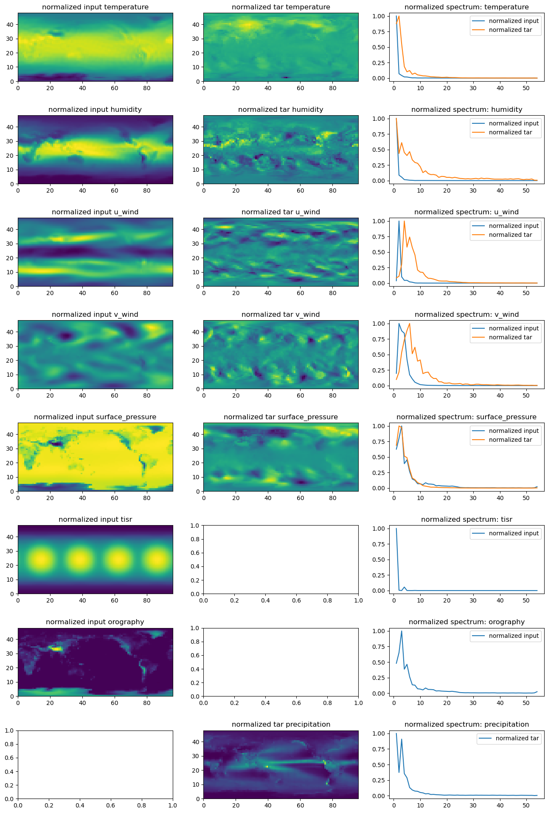
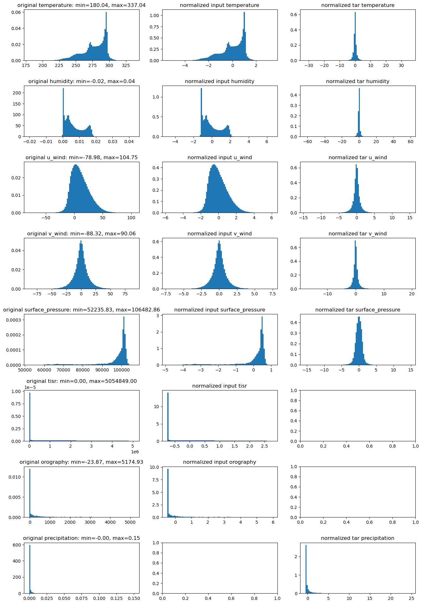

!module listCurrently Loaded Modulefiles:
1) openmpi/4.1.5 2) singularity 3) NCI-ai-ml/25.07 4) pbs 1gpuvolta1gpu<xy01>gdata/dk92+scratch/<xy01>/g/data/dk92/apps/Modules/modulefiles/NCI-ai-ml/25.0710GBCopy the tested notebook from any/all of the following path to your own working directory. If your working directory is different from “/scratch/
/g/data/dk92/notebooks/examples-aiml/lucie/data_inspection.ipynb
/g/data/dk92/notebooks/examples-aiml/lucie/replicate_training.ipynb
/g/data/dk92/notebooks/examples-aiml/lucie/modified_training.ipynb
/g/data/dk92/notebooks/examples-aiml/lucie/inference_10y_rollout.ipynbAll the notebooks are using the original dataset released with the LUCIE paper inside their zenodo record [3]. checkpoints for models trained on Gadi is available in the directory /g/data/dk92/notebooks/examples-aiml/lucie/checkpoints together with the original checkpoint, regular_8x72_fftreg_baseline.pth, released with the LUCIE paper.
LUCIE is a SFNO based atmospheric emulator that can be used for climate research. It is notable for its long-term stability in autoregressive predictions, maintaining an unbiased climatology for thousands of years. It was trained on 9.5 years of regridded ERA5 data on T30 grid, incorporating static input of orography, forcing variable of total incident solar radiation, five prognostic variables (temperature, humidity, zonal wind, meridional wind, and surface pressure), and one diagnostic variable of precipitation.
In the paper [1], Guan et al. demonstrate LUCIE’s ability to reproduce long-term climatology as well as its skill in subseasonal-to-seasonal scale predictions of atmospheric variables. Using 100 years of autoregressive inference with 100 ensemble members, they showcase the model’s stability and the variability of mean climatology. The ensemble outputs were further analysed to identify northern hemisphere annular mode(NAM), southern hemisphere annular mode (SAM) and the return period of extreme events.
At NCI, we made the environment NCI-ai-ml compatible to run LUCIE, and prepared four notebooks introducing its dataset, training and inference workflow. In addition, we extended the model to exploit the resolution-invariant property of neural operators by removing LUCIE’s positional embedding, see details in the notebook modified_training.ipynb. All the four notebooks are primarily based on their released code [2][3], which we adapted for training and inference on Gadi.
Beyond the notebooks, we further tested multiple model architectural configurations, training datasets with different spatial resolutions and variable sets, and explored alternative training strategies. For example, results presented in the Stable Rollout section showcase a 1° model with 25 output variables, capable of generating stable rollouts at six-hour interval for up to ten years. Please note the current limitation arises from the length of our dataset, not the capability of the model.
References:
1. Guan, H., Arcomano, T., Chattopadhyay, A., & Maulik, R. (2024). LUCIE: A Lightweight Uncoupled ClImate Emulator with long-term stability and physical consistency for O(1000)-member ensembles. arXiv preprint arXiv:2405.16297. https://arxiv.org/abs/2405.16297
ISCLPennState. (2024). LUCIE: Lightweight Uncoupled ClImate Emulator [Software]. GitHub. https://github.com/ISCLPennState/LUCIE
Guan, H., Arcomano, T., Chattopadhyay, A., & Maulik, R. (2025). LUCIE: A lightweight uncoupled climate emulator with long-term stability and physical consistency. Zenodo. https://doi.org/10.5281/zenodo.15164648
!module listCurrently Loaded Modulefiles:
1) openmpi/4.1.5 2) singularity 3) NCI-ai-ml/25.07 4) pbs import scipy.stats as stats
import numpy as np
import torch
import matplotlib.pyplot as pltnb_dir = "/g/data/dk92/notebooks/examples-aiml/lucie"
data = np.load(f"{nb_dir}/datasets/era5_T30_regridded.npz")
data.files['temperature',
'humidity',
'u_wind',
'v_wind',
'surface_pressure',
'precipitation',
'tisr',
'orography']# comparing mean, std to era5, t-> t1000, q -> q1000, z->z200, u-> u200, v-> v200
for var in data.files:
mm = data[var].mean()
ss = data[var].std()
print(f"{var}: mean={mm}, std={ss}")temperature: mean=277.4626770019531, std=17.816375732421875
humidity: mean=0.006629979237914085, std=0.005532822106033564
u_wind: mean=10.695755004882812, std=15.56001091003418
v_wind: mean=-0.02342492900788784, std=12.149330139160156
surface_pressure: mean=96811.390625, std=9123.89453125
precipitation: mean=0.0006106931250542402, std=0.001604488817974925
tisr: mean=1079093.125, std=1444145.25
orography: mean=367.17120361328125, std=809.2915649414062data = np.load(f"{nb_dir}/datasets/era5_T30_preprocessed.npz")
data_inp = data["data_inp"] # input data
data_tar = data["data_tar"]
raw_means = data["raw_means"]
raw_stds = data["raw_stds"]
prog_means = raw_means[:5] # this is literally zero?
prog_stds = raw_stds[:5] # this is literally zero?
diag_means = data["diag_means"]
diag_stds = data["diag_stds"]
diff_means = data["diff_means"]
diff_stds = data["diff_stds"]vars = ['temperature', 'humidity', 'u_wind', 'v_wind', 'surface_pressure', 'tisr', 'orography']
list(zip(vars, raw_means, raw_stds))[('temperature', np.float64(277.462646484375), np.float64(17.816408157348633)),
('humidity',
np.float64(0.006629981566220522),
np.float64(0.005532818380743265)),
('u_wind', np.float64(10.695756912231445), np.float64(15.56002426147461)),
('v_wind', np.float64(-0.023422522470355034), np.float64(12.14930534362793)),
('surface_pressure', np.float64(96811.390625), np.float64(9123.8916015625)),
('tisr', np.float64(1079094.75), np.float64(1444147.125)),
('orography', np.float64(367.17120361328125), np.float64(809.2916259765625))]vars= ['temperature', 'humidity', 'u_wind', 'v_wind', 'surface_pressure']
list(zip(vars, diff_means, diff_stds))[('temperature',
np.float64(9.803541615838185e-05),
np.float64(1.4138480424880981)),
('humidity',
np.float64(2.0586108817610693e-08),
np.float64(0.0005922476993873715)),
('u_wind',
np.float64(-3.1180163205135614e-05),
np.float64(4.642238140106201)),
('v_wind', np.float64(-5.063314802100649e-06), np.float64(5.960874080657959)),
('surface_pressure',
np.float64(0.0021911216899752617),
np.float64(241.07797241210938))]list(zip(vars,[ diff_stds[ii] / raw_stds[ii] for ii in range(5) ]))[('temperature', np.float64(0.07935651395059314)),
('humidity', np.float64(0.1070426785467356)),
('u_wind', np.float64(0.298343888293286)),
('v_wind', np.float64(0.4906349714705557)),
('surface_pressure', np.float64(0.026422713348635562))]# for log scale preciptation
diag_means,diag_stds(array([0.05197881]), array([0.11017133]))wdir = "/g/data/z00/yxs900/neuraloperators/sfno/curriculum_learning/lowRes/experiments/03_LUCIE/LUCIE_fix"
raw_data = np.load(f"{nb_dir}/datasets/era5_T30_regridded.npz")
data = np.load(f"{nb_dir}/datasets/era5_T30_preprocessed.npz")
data_inp = data["data_inp"] # input data
data_tar = data["data_tar"]
inp_vars = ['temperature', 'humidity', 'u_wind', 'v_wind', 'surface_pressure', 'tisr', 'orography']
tar_vars = ['temperature', 'humidity', 'u_wind', 'v_wind', 'surface_pressure','precipitation']
vars_to_plot = ['temperature', 'humidity', 'u_wind', 'v_wind', 'surface_pressure', 'tisr', 'orography','precipitation']
raw_data["temperature"].shape, data_inp.shape, data_tar.shape((16538, 48, 96), (16537, 7, 48, 96), (16537, 6, 48, 96))def img2spectrum(img,ftr):
npix = img.shape[-2], img.shape[-1]
fft_img = np.fft.fftn(img)
fft_amp = np.abs(fft_img)**2
fft_amp = fft_amp.flatten()
kfreq_x = np.fft.fftfreq(npix[1]) * npix[1] # wave vector
kfreq_y = np.fft.fftfreq(npix[0]) * npix[0] # wave vector
kfreq2D = np.meshgrid(kfreq_x, kfreq_y)
knrm = np.sqrt(kfreq2D[0]**2 + kfreq2D[1]**2)
knrm = knrm.flatten()
#kbins = np.arange(0.5, min(*npix)//2+1, 1.)
kbins = np.arange(0.5, ftr, 1.)
kvals = 0.5 * (kbins[1:] + kbins[:-1])
Abins, _, _ = stats.binned_statistic(
knrm,
fft_amp,
statistic='mean',
bins=kbins
)
Abins *= np.pi * (kbins[1:]**2 - kbins[:-1]**2)
return kvals, Abins# plot the spatial and spectral pattern of all variable fields
fig, axes = plt.subplots(len(vars_to_plot), 3, figsize=(16, 3 * len(vars_to_plot)))
if len(vars_to_plot) == 1:
axes = [axes]
for ii, var in enumerate(vars_to_plot):
#print(var)
# First column: original
if var in inp_vars:
idx = inp_vars.index(var)
data_norm0 = data_inp[:,idx,:,:].mean(axis=(0,))
axes[ii, 0].pcolormesh(data_norm0)
axes[ii, 0].set_title(f"normalized input {var}")
ftr = max(*data_norm0.shape)
kvals0, Abins0 = img2spectrum(data_norm0,ftr)
axes[ii, 2].plot(kvals0, Abins0/max(Abins0), label="normalized input")
# Second column: normalized input data
if var in tar_vars:
idx = tar_vars.index(var)
data_norm1 = data_tar[:,idx,:,:].mean(axis=(0,))
axes[ii, 1].pcolormesh(data_norm1)
axes[ii, 1].set_title(f"normalized tar {var}")
ftr = max(*data_norm1.shape)
kvals1, Abins1 = img2spectrum(data_norm1,ftr)
axes[ii, 2].plot(kvals1, Abins1/max(Abins1), label="normalized tar")
# third column: normalized output data
axes[ii, 2].legend()
axes[ii, 2].set_title(f"normalized spectrum: {var}")
plt.subplots_adjust(hspace=0.5)
# plot the global mean over time of each variable
fig, axes = plt.subplots(len(vars_to_plot), 3, figsize=(16, 3 * len(vars_to_plot)))
if len(vars_to_plot) == 1:
axes = [axes]
for ii, var in enumerate(vars_to_plot):
#print(var)
# First column: normalized input data
data = raw_data[var]
axes[ii, 0].plot(data.mean(axis=(-2,-1)))
axes[ii, 0].set_title(f"original {var}")
# Second column: normalized output data
if var in inp_vars:
idx = inp_vars.index(var)
data_norm0 = data_inp[:,idx,:,:].mean(axis=(-2,-1))
axes[ii, 1].plot(data_norm0)
axes[ii, 1].set_title(f"normalized input {var}")
# third column: normalized input vs output data spectrum
if var in tar_vars:
idx = tar_vars.index(var)
data_norm1 = data_tar[:,idx,:,:].mean(axis=(-2,-1))
axes[ii, 2].plot(data_norm1)
axes[ii, 2].set_title(f"normalized tar {var}")
plt.subplots_adjust(hspace=0.5)
# plot the distribution of all variable fileds
wdir = "/g/data/z00/yxs900/neuraloperators/sfno/curriculum_learning/lowRes/experiments/03_LUCIE/LUCIE_fix"
raw_data = np.load(f"{wdir}/era5_T30_regridded.npz")
data = np.load(f"{wdir}/era5_T30_preprocessed.npz")
data_inp = data["data_inp"] # input data
data_tar = data["data_tar"]
inp_vars = ['temperature', 'humidity', 'u_wind', 'v_wind', 'surface_pressure', 'tisr', 'orography']
tar_vars = ['temperature', 'humidity', 'u_wind', 'v_wind', 'surface_pressure','precipitation']
vars_to_plot = ['temperature', 'humidity', 'u_wind', 'v_wind', 'surface_pressure', 'tisr', 'orography','precipitation']
fig, axes = plt.subplots(len(vars_to_plot), 3, figsize=(16, 3 * len(vars_to_plot)))
if len(vars_to_plot) == 1:
axes = [axes]
for ii, var in enumerate(vars_to_plot):
#print(var)
data = raw_data[var]
data = data[~np.isnan(data)]
# Compute min, max, 5th and 95th percentiles
vmin = data.min()
vmax = data.max()
# First column: original
axes[ii, 0].hist(data, bins=100,density=True)
axes[ii, 0].set_title(f"original {var}: min={vmin:.2f}, max={vmax:.2f}")
# Second column: normalized input data
if var in inp_vars:
idx = inp_vars.index(var)
data_norm0 = data_inp[:,idx,:,:].flatten()
axes[ii, 1].hist(data_norm0, bins=100, density=True)
axes[ii, 1].set_title(f"normalized input {var}")
# third column: normalized output data
if var in tar_vars:
idx = tar_vars.index(var)
data_norm1 = data_tar[:,idx,:,:].flatten()
axes[ii, 2].hist(data_norm1, bins=100, density=True)
axes[ii, 2].set_title(f"normalized tar {var}")
plt.subplots_adjust(hspace=0.5)
!module listCurrently Loaded Modulefiles:
1) openmpi/4.1.5 2) singularity 3) NCI-ai-ml/25.07 4) pbs import torch
from torch.utils.data import TensorDataset, DataLoader
from torch.optim.lr_scheduler import CosineAnnealingLR
import sys,os,time
nb_dir="/g/data/dk92/notebooks/examples-aiml/lucie"
sys.path.append(f"{nb_dir}/models")
from torch_harmonics_local import *
from LUCIE_inference import inference
device = torch.device('cuda:0' if torch.cuda.is_available() else 'cpu')
if torch.cuda.is_available():
torch.cuda.set_device(0)# define util functions, overide the one defined in LUCIE_train.py
def integrate_grid(ugrid):
dlon = 2 * torch.pi / nlon
out = torch.sum(ugrid * quad_weights * dlon, dim=(-2, -1))
return out
def l2loss_sphere(prd, tar, relative=False, squared=True):
loss = integrate_grid((prd - tar)**2).sum(dim=-1)
if relative:
loss = loss / integrate_grid(tar**2).sum(dim=-1)
if not squared:
loss = torch.sqrt(loss)
loss = loss.mean()
return loss
def train_model(model, tdl, optimizer, scheduler=None, nepochs=20, loss_fn='l2'):
infer_bias = 1e+80
ibs = torch.zeros(1,nepochs)
best_bias = 1e+80
recall_count = 0
acc_losses = []
epoch_times = []
#ckpt_dir=f"{os.environ['PBS_O_WORKDIR']}/checkpoints/{os.environ['PBS_JOBID']}"
ckpt_dir=os.getcwd()
for epoch in range(nepochs):
tstamp=time.strftime("%H:%M:%S",time.localtime())
print(f'--------------------------------------------------------------------------------')
print(f"{tstamp}: epoch {epoch} start")
epoch_start = time.time()
if epoch < 149:
if scheduler is not None:
scheduler.step()
print(f'using scheduler: current learning rate = {scheduler.get_last_lr()}')
else:
for param_group in optimizer.param_groups:
param_group['lr'] = 1e-6
print(f"current learning rate = {optimizer.param_groups[0]['lr']}")
optimizer.zero_grad()
acc_loss = 0
model.train()
#batch_num = 0
for inp, tar in tdl:
#batch_num += 1
#loss = 0
inp = inp.to(device)
tar = tar.to(device)
prd = model(inp)
loss_delta = l2loss_sphere(prd[:,:5,:,:], tar[:,:5,:,:], relative=True)
loss_tp = torch.mean((prd[:,5:,:,:]-tar[:,5:,:,:])**2)
loss = loss_delta + loss_tp / tar.shape[1]
if epoch > 150:
#print(f"add spectral loss")
lat_index = np.r_[7:15, 32:40]
out_fft = torch.mean(torch.abs(torch.fft.rfft(prd[:,:,lat_index,:],dim=3)),dim=2)
target_fft = torch.mean(torch.abs(torch.fft.rfft(tar[:,:,lat_index,:],dim=3)),dim=2)
loss_reg = 0.05 * torch.mean(torch.abs(out_fft - target_fft))
loss = loss + loss_reg
optimizer.zero_grad()
loss.backward()
optimizer.step()
acc_loss += loss.item()* inp.size(0)
acc_losses.append(acc_loss / len(tdl.dataset))
epoch_times.append(time.time() - epoch_start)
tstamp=time.strftime("%H:%M:%S",time.localtime())
print(f'{tstamp}: Epoch {epoch} summary:')
print(f'time taken: {epoch_times[-1]}')
print(f'nsamples / sec: {len(tdl.dataset)/epoch_times[-1]}')
print(f'average training loss: {acc_losses[-1]}')
if epoch >= 60:
rollout_steps = 2920
rollout = torch.tensor(inference(model, rollout_steps, data_inp[0:1].to(device), data_inp[:1460,-2:].to(device), 1, prog_means, prog_stds, diag_means, diag_stds, diff_stds)).to(device)
rollout_clim = torch.mean(rollout[1460:],dim=0)
clim_bias = torch.mean(torch.abs(rollout_clim - true_clim))
ibs[0,epoch] = clim_bias
if len(ibs>0)<=20:
infer_bias = torch.mean(torch.tensor(ibs[0,60:epoch+1]))
else:
infer_bias = torch.mean(ibs[0,epoch-20:epoch+1])
print(f'clim_bias: {clim_bias}')
print(f'infer_bias: {infer_bias}')
if clim_bias <= best_bias:
print(f"new best clim_bias, save checkpoint")
best_bias = clim_bias
#torch.save({"epoch":epoch,"model_state_dict":model.state_dict(),"optim_state_dict":optimizer.state_dict(),"sch_state_dict":scheduler.state_dict()},f"{ckpt_dir}/lucie_{epoch}.pt")
torch.save(model.state_dict(), f"{ckpt_dir}/regular_training_checkpoint.pth")
if epoch % 10 == 0:
if ~torch.isnan(clim_bias):
if clim_bias <= infer_bias:
#print(f"clim_bias <= {infer_bias}, save checkpoint")
#infer_bias = clim_bias
#torch.save(model.state_dict(), f"{ckpt_dir}/regular_training_checkpoint.pth")
recall_count = 0
else:
print(f"clim_bias > {infer_bias}, recall from latest checkpoint")
state_pth = torch.load(f"{ckpt_dir}/regular_training_checkpoint.pth")
model.load_state_dict(state_pth)
recall_count += 1
if recall_count > 3:
break# load data
data = load_data(f"{nb_dir}/datasets/era5_T30_regridded.npz")[...,:6]
true_clim = torch.tensor(np.mean(data, axis=0)).to(device).permute(2,0,1)
data = np.load(f"{nb_dir}/datasets/era5_T30_preprocessed.npz") # standardized data with mean and stds generated from dataset_generator.py
data_inp = torch.tensor(data["data_inp"],dtype=torch.float32) # input data
data_tar = torch.tensor(data["data_tar"],dtype=torch.float32)
raw_means = torch.tensor(data["raw_means"],dtype=torch.float32).reshape(1,-1,1,1).to(device)
raw_stds = torch.tensor(data["raw_stds"],dtype=torch.float32).reshape(1,-1,1,1).to(device)
prog_means = raw_means[:,:5]
prog_stds = raw_stds[:,:5]
diag_means = torch.tensor(data["diag_means"],dtype=torch.float32).reshape(1,-1,1,1).to(device)
diag_stds = torch.tensor(data["diag_stds"],dtype=torch.float32).reshape(1,-1,1,1).to(device)
diff_means = torch.tensor(data["diff_means"],dtype=torch.float32).reshape(1,-1,1,1).to(device)
diff_stds = torch.tensor(data["diff_stds"],dtype=torch.float32).reshape(1,-1,1,1).to(device)
ntrain = 16000
train_set = TensorDataset(data_inp[:ntrain],data_tar[:ntrain])
train_loader = DataLoader(train_set, batch_size=16, shuffle=True)# set the model
nlat = 48
nlon = 96
hard_thresholding_fraction = 0.9
cost, quad_weights = legendre_gauss_weights(nlat, -1, 1)
quad_weights = (torch.as_tensor(quad_weights).reshape(-1, 1)).to(device)
model = SphericalFourierNeuralOperatorNet(params = {}, spectral_transform='sht', filter_type = "linear", operator_type='dhconv', img_shape=(48, 96),
num_layers=8, in_chans=7, out_chans=6, scale_factor=1, embed_dim=72, activation_function="silu", big_skip=True, pos_embed="latlon", use_mlp=True,
normalization_layer="instance_norm", hard_thresholding_fraction=hard_thresholding_fraction,
mlp_ratio = 2.).to(device)
optimizer = torch.optim.Adam(model.parameters(), lr=1e-4, weight_decay=0)
scheduler = CosineAnnealingLR(optimizer, T_max=150, eta_min=1e-5)
print(sum(p.numel() for p in model.parameters()))4122864# it takes roughly 75 sec per epoch to train the original LUCIE model on a single V100
# checkpoint saved at epoch 340 is available in `/g/data/dk92/notebooks/examples-aiml/lucie/checkpoints/`
nepochs=3
train_model(model, train_loader, optimizer, scheduler=scheduler, nepochs=nepochs)--------------------------------------------------------------------------------
18:39:35: epoch 0 start
using scheduler: current learning rate = [9.998026259498021e-05]/opt/conda/envs/mlenv/lib/python3.10/site-packages/torch/optim/lr_scheduler.py:182: UserWarning: Detected call of `lr_scheduler.step()` before `optimizer.step()`. In PyTorch 1.1.0 and later, you should call them in the opposite order: `optimizer.step()` before `lr_scheduler.step()`. Failure to do this will result in PyTorch skipping the first value of the learning rate schedule. See more details at https://pytorch.org/docs/stable/optim.html#how-to-adjust-learning-rate
warnings.warn(
/opt/conda/envs/mlenv/lib/python3.10/site-packages/torch/optim/lr_scheduler.py:990: UserWarning: To get the last learning rate computed by the scheduler, please use `get_last_lr()`.
_warn_get_lr_called_within_step(self)18:40:49: Epoch 0 summary:
time taken: 73.2493634223938
nsamples / sec: 218.43193240787235
average training loss: 0.568795047662941
--------------------------------------------------------------------------------
18:40:49: epoch 1 start
using scheduler: current learning rate = [9.993093369094605e-05]
18:42:02: Epoch 1 summary:
time taken: 73.02629399299622
nsamples / sec: 219.0991644945658
average training loss: 0.44222918830883634
--------------------------------------------------------------------------------
18:42:02: epoch 2 start
using scheduler: current learning rate = [9.986190524833163e-05]
18:43:15: Epoch 2 summary:
time taken: 72.95869874954224
nsamples / sec: 219.30215689462784
average training loss: 0.4068589104065609rollout_clim and true_clim to be the latitude-weighted global mean and re-run the training!module listCurrently Loaded Modulefiles:
1) openmpi/4.1.5 2) singularity 3) NCI-ai-ml/25.07 4) pbs import torch
from torch.utils.data import TensorDataset, DataLoader
from torch.optim.lr_scheduler import CosineAnnealingLR
import sys,os,time
nb_dir="/g/data/dk92/notebooks/examples-aiml/lucie"
sys.path.append(f"{nb_dir}/models")
from torch_harmonics_local_v2 import *
device = torch.device('cuda:0' if torch.cuda.is_available() else 'cpu')
if torch.cuda.is_available():
torch.cuda.set_device(0)# normalization function used for static channels.
def _minmax(img):
return torch.as_tensor((img-img.min())/(img.max()-img.min()))
def generate_t30_grid():
nlat = 48 # Number of latitudes
nlon = 96 # Number of longitudes
# Gaussian latitudes and weights
latitudes, weights = np.polynomial.legendre.leggauss(nlat)
latitudes = np.arcsin(latitudes) * (180.0 / np.pi) # Convert to degrees
# Longitudes
longitudes = np.linspace(0, 360, nlon, endpoint=False)
return latitudes, longitudes# modified inference function adapted to lat,lon inputs
def inference(model, steps, initial_frame, forcing, initial_forcing_idx, prog_means, prog_stds, diag_means, diag_stds, diff_stds):
inf_data = []
inp_const =const_chans.to(device,dtype=torch.float32)
model.eval()
with torch.no_grad():
inp_val = initial_frame
for i in range(steps):
forcing_idx = (initial_forcing_idx + i) % 1460 # tisr is repeating and orography is
previous = inp_val[:,:5,:,:]
inpc_val = torch.cat([inp_const, inp_val],dim=1)
pred = model(inpc_val)
pred[:,:5,:,:] = pred[:,:5,:,:] * diff_stds # denormalize the predicted tendency
# demornalzie the previous time step and add to the tendecy to reconstruct the current field
pred[:,:5,:,:] += previous[:,:5,:,:] * prog_stds + prog_means
tp_frame = pred[:,5:,:,:] * diag_stds + diag_means
raw = torch.cat((pred[:,:5,:,:],tp_frame), 1)
inp_val = (raw[:,:5,:,:] - prog_means) / prog_stds # normalize the current time step for autoregressive prediction
inp_val = torch.cat((inp_val, forcing[forcing_idx,:,:,:].reshape(1,2,48,96)), dim=1)
raw = raw.cpu().clone().detach().numpy()
inf_data.append(raw[0])
inf_data = np.array(inf_data)
inf_data[:,5,:,:] = (np.exp(inf_data[:,5,:,:]) - 1) * 1e-2 # denormalzie precipitation that was normalized in log space
return inf_data# define util functions, overide the one defined in LUCIE_train.py
def integrate_grid(ugrid):
dlon = 2 * torch.pi / nlon
out = torch.sum(ugrid * quad_weights * dlon, dim=(-2, -1))
return out
def l2loss_sphere(prd, tar, relative=False, squared=True):
loss = integrate_grid((prd - tar)**2).sum(dim=-1)
if relative:
loss = loss / integrate_grid(tar**2).sum(dim=-1)
if not squared:
loss = torch.sqrt(loss)
loss = loss.mean()
return loss
def train_model(model, tdl, optimizer, scheduler=None, nepochs=20, loss_fn='l2'):
infer_bias = 1e+80
ibs = torch.zeros(1,nepochs)
best_bias = 1e+80
recall_count = 0
acc_losses = []
epoch_times = []
#ckpt_dir=f"{os.environ['PBS_O_WORKDIR']}/checkpoints/{os.environ['PBS_JOBID']}"
for epoch in range(nepochs):
tstamp=time.strftime("%H:%M:%S",time.localtime())
print(f'--------------------------------------------------------------------------------')
print(f"{tstamp}: epoch {epoch} start")
epoch_start = time.time()
if epoch < 149:
if scheduler is not None:
scheduler.step()
print(f'using scheduler: current learning rate = {scheduler.get_last_lr()}')
else:
for param_group in optimizer.param_groups:
param_group['lr'] = 1e-6
print(f"current learning rate = {optimizer.param_groups[0]['lr']}")
optimizer.zero_grad()
acc_loss = 0
model.train()
#batch_num = 0
for inp, tar in tdl:
#batch_num += 1
#loss = 0
#inp = inp.to(device)
# adding lat, lon as the first two channels
inpc = torch.cat([const_chans_t, inp],dim=1).to(device,dtype=torch.float32)
tar = tar.to(device)
prd = model(inpc)
# prd and tar shape are not affected, keep this section
loss_delta = l2loss_sphere(prd[:,:5,:,:], tar[:,:5,:,:], relative=True)
loss_tp = torch.mean((prd[:,5:,:,:]-tar[:,5:,:,:])**2)
loss = loss_delta + loss_tp / tar.shape[1]
if epoch > 150:
#print(f"add spectral loss")
lat_index = np.r_[7:15, 32:40]
out_fft = torch.mean(torch.abs(torch.fft.rfft(prd[:,:,lat_index,:],dim=3)),dim=2)
target_fft = torch.mean(torch.abs(torch.fft.rfft(tar[:,:,lat_index,:],dim=3)),dim=2)
loss_reg = 0.05 * torch.mean(torch.abs(out_fft - target_fft))
loss = loss + loss_reg
optimizer.zero_grad()
loss.backward()
optimizer.step()
acc_loss += loss.item()* inp.size(0)
acc_losses.append(acc_loss / len(tdl.dataset))
epoch_times.append(time.time() - epoch_start)
tstamp=time.strftime("%H:%M:%S",time.localtime())
print(f'{tstamp}: Epoch {epoch} summary:')
print(f'time taken: {epoch_times[-1]}')
print(f'nsamples / sec: {len(tdl.dataset)/epoch_times[-1]}')
print(f'average training loss: {acc_losses[-1]}')
if epoch >= 60:
rollout_steps = 2920
rollout = torch.tensor(inference(model, rollout_steps, data_inp[0:1].to(device), data_inp[:1460,-2:].to(device), 1, prog_means, prog_stds, diag_means, diag_stds, diff_stds)).to(device)
rollout_clim = torch.mean(rollout[1460:],dim=0)
clim_bias = torch.mean(torch.abs(rollout_clim - true_clim))
ibs[0,epoch] = clim_bias
if len(ibs>0)<=20:
infer_bias = torch.mean(torch.tensor(ibs[0,60:epoch+1]))
else:
infer_bias = torch.mean(ibs[0,epoch-20:epoch+1])
print(f'clim_bias: {clim_bias}')
print(f'infer_bias: {infer_bias}')
if clim_bias <= best_bias:
print(f"new best clim_bias, save checkpoint")
best_bias = clim_bias
#torch.save({"epoch":epoch,"model_state_dict":model.state_dict(),"optim_state_dict":optimizer.state_dict(),"sch_state_dict":scheduler.state_dict()},f"{ckpt_dir}/lucie_{epoch}.pt")
torch.save(model.state_dict(), f"{ckpt_dir}/regular_training_checkpoint.pth")
if epoch % 10 == 0:
if ~torch.isnan(clim_bias):
if clim_bias <= infer_bias:
#print(f"clim_bias <= {infer_bias}, save checkpoint")
#infer_bias = clim_bias
#torch.save(model.state_dict(), f"{ckpt_dir}/regular_training_checkpoint.pth")
recall_count = 0
else:
print(f"clim_bias > {infer_bias}, recall from latest checkpoint")
state_pth = torch.load(f"{ckpt_dir}/regular_training_checkpoint.pth")
model.load_state_dict(state_pth)
recall_count += 1
if recall_count > 3:
break# load data
data = load_data(f"{nb_dir}/datasets/era5_T30_regridded.npz")[...,:6]
true_clim = torch.tensor(np.mean(data, axis=0)).to(device).permute(2,0,1)
data = np.load(f"{nb_dir}/datasets/era5_T30_preprocessed.npz") # standardized data with mean and stds generated from dataset_generator.py
data_inp = torch.tensor(data["data_inp"],dtype=torch.float32) # input data
data_tar = torch.tensor(data["data_tar"],dtype=torch.float32)
raw_means = torch.tensor(data["raw_means"],dtype=torch.float32).reshape(1,-1,1,1).to(device)
raw_stds = torch.tensor(data["raw_stds"],dtype=torch.float32).reshape(1,-1,1,1).to(device)
prog_means = raw_means[:,:5]
prog_stds = raw_stds[:,:5]
diag_means = torch.tensor(data["diag_means"],dtype=torch.float32).reshape(1,-1,1,1).to(device)
diag_stds = torch.tensor(data["diag_stds"],dtype=torch.float32).reshape(1,-1,1,1).to(device)
diff_means = torch.tensor(data["diff_means"],dtype=torch.float32).reshape(1,-1,1,1).to(device)
diff_stds = torch.tensor(data["diff_stds"],dtype=torch.float32).reshape(1,-1,1,1).to(device)
ntrain = 16000
train_set = TensorDataset(data_inp[:ntrain],data_tar[:ntrain])
train_loader = DataLoader(train_set, batch_size=16, shuffle=True, drop_last=True)
# generate the const channels
lats, lons = generate_t30_grid()
lon2d, lat2d = np.meshgrid(lons, lats)
const_chans = _minmax(np.stack([_minmax(lat2d), _minmax(lon2d)])).unsqueeze(0)
const_chans_t = const_chans.expand(16, 2, 48, 96)# set the model
nlat = 48
nlon = 96
hard_thresholding_fraction = 0.9
cost, quad_weights = legendre_gauss_weights(nlat, -1, 1)
quad_weights = (torch.as_tensor(quad_weights).reshape(-1, 1)).to(device)
model = SphericalFourierNeuralOperatorNet(params = {}, spectral_transform='sht', filter_type = "linear", operator_type='dhconv', img_shape=(48, 96),num_layers=8, in_chans=9, out_chans=6, scale_factor=1, embed_dim=72, activation_function="silu", big_skip=True, pos_embed=False, use_mlp=True,normalization_layer="instance_norm", hard_thresholding_fraction=hard_thresholding_fraction,mlp_ratio = 2.).to(device)
optimizer = torch.optim.Adam(model.parameters(), lr=1e-4, weight_decay=0)
scheduler = CosineAnnealingLR(optimizer, T_max=150, eta_min=1e-5)
print(sum(p.numel() for p in model.parameters()))3791376# it takes roughly 75 sec per epoch to train the modified LUCIE model on a single V100
# checkpoints saved at epoch 193 and 219 are available in `/g/data/dk92/notebooks/examples-aiml/lucie/checkpoints/`
nepochs=3
train_model(model, train_loader, optimizer, scheduler=scheduler, nepochs=nepochs)--------------------------------------------------------------------------------
17:55:28: epoch 0 start
using scheduler: current learning rate = [9.999013075636805e-05]/opt/conda/envs/mlenv/lib/python3.10/site-packages/torch/optim/lr_scheduler.py:182: UserWarning: Detected call of `lr_scheduler.step()` before `optimizer.step()`. In PyTorch 1.1.0 and later, you should call them in the opposite order: `optimizer.step()` before `lr_scheduler.step()`. Failure to do this will result in PyTorch skipping the first value of the learning rate schedule. See more details at https://pytorch.org/docs/stable/optim.html#how-to-adjust-learning-rate
warnings.warn(17:56:44: Epoch 0 summary:
time taken: 75.56519341468811
nsamples / sec: 211.73769664288284
average training loss: 0.5649356337823864
--------------------------------------------------------------------------------
17:56:44: epoch 1 start
using scheduler: current learning rate = [9.996052735444863e-05]
17:57:58: Epoch 1 summary:
time taken: 74.5183458328247
nsamples / sec: 214.71222718623653
average training loss: 0.4445175377408696
--------------------------------------------------------------------------------
17:57:58: epoch 2 start
using scheduler: current learning rate = [9.991120277927221e-05]
17:59:13: Epoch 2 summary:
time taken: 74.4180178642273
nsamples / sec: 215.00169527749802
average training loss: 0.41059033054741506model and the model used in /g/data/dk92/notebooks/examples-aiml/lucie/replicate_training.ipynb./g/data/dk92/notebooks/examples-aiml/lucie/replicate_training.ipynb./g/data/dk92/notebooks/examples-aiml/lucie/replicate_training.ipynb.!module listCurrently Loaded Modulefiles:
1) openmpi/4.1.5 2) singularity 3) NCI-ai-ml/25.07 4) pbs from math import ceil
import matplotlib.pyplot as plt
import cartopy.crs as ccrs
import torch
import sys,os,time
nb_dir="/g/data/dk92/notebooks/examples-aiml/lucie"
sys.path.append(f"{nb_dir}/models")
from torch_harmonics_local import *
from LUCIE_inference import inference
device = torch.device('cuda:0' if torch.cuda.is_available() else 'cpu')
if torch.cuda.is_available():
torch.cuda.set_device(0)# load the ground truth for clim_bias from the original work
data = load_data(f"{nb_dir}/datasets/era5_T30_regridded.npz")[...,:6]
true_clim = torch.tensor(np.mean(data, axis=0)).to(device).permute(2,0,1)# load the normalization scalars from the original work
data = np.load(f"{nb_dir}/datasets/era5_T30_preprocessed.npz") # standardized data with mean and stds generated from dataset_generator.py
data_inp = torch.tensor(data["data_inp"],dtype=torch.float32) # input data
data_tar = torch.tensor(data["data_tar"],dtype=torch.float32)
raw_means = torch.tensor(data["raw_means"],dtype=torch.float32).reshape(1,-1,1,1).to(device)
raw_stds = torch.tensor(data["raw_stds"],dtype=torch.float32).reshape(1,-1,1,1).to(device)
prog_means = raw_means[:,:5]
prog_stds = raw_stds[:,:5]
diag_means = torch.tensor(data["diag_means"],dtype=torch.float32).reshape(1,-1,1,1).to(device)
diag_stds = torch.tensor(data["diag_stds"],dtype=torch.float32).reshape(1,-1,1,1).to(device)
diff_means = torch.tensor(data["diff_means"],dtype=torch.float32).reshape(1,-1,1,1).to(device)
diff_stds = torch.tensor(data["diff_stds"],dtype=torch.float32).reshape(1,-1,1,1).to(device)# initialize the SFNO model
grid='legendre-gauss'
nlat = 48
nlon = 96
hard_thresholding_fraction = 0.9
lmax = ceil(nlat / 1)
mmax = lmax
modes_lat = int(nlat * hard_thresholding_fraction)
modes_lon = int(nlon//2 * hard_thresholding_fraction)
modes_lat = modes_lon = min(modes_lat, modes_lon)
sht = RealSHT(nlat, nlon, lmax=modes_lat, mmax=modes_lon, grid=grid, csphase=False)
radius=6.37122E6
cost, quad_weights = legendre_gauss_weights(nlat, -1, 1)
quad_weights = (torch.as_tensor(quad_weights).reshape(-1, 1)).to(device)
model = SphericalFourierNeuralOperatorNet(params = {}, spectral_transform='sht', filter_type = "linear", operator_type='dhconv', img_shape=(48, 96),
num_layers=8, in_chans=7, out_chans=6, scale_factor=1, embed_dim=72, activation_function="silu", big_skip=True, pos_embed="latlon", use_mlp=True,
normalization_layer="instance_norm", hard_thresholding_fraction=hard_thresholding_fraction,
mlp_ratio = 2.).to(device)
gadi=False
if gadi:
#load checkpoint trained on Gadi
print("loading LUCIE checkpoint trained on Gadi")
pth = torch.load(f'{nb_dir}/checkpoints/nci_rep_lucie_340.pt')
model.load_state_dict(pth["model_state_dict"])
else:
print("loading original LUCIE checkpoint")
pth = torch.load(f'{nb_dir}/checkpoints/regular_8x72_fftreg_baseline.pth')
model.load_state_dict(pth)
# run rollout for 10 years
forcing = data_inp[:1460,-2:] # repeating tisr and constant oro
rollout_step = 14600 # 10y of rollout
initial_frame_idx = 16000+100
forcing_initial_idx = (16000+100) % 1460 + 1
rollout = inference(model, rollout_step, data_inp[initial_frame_idx].unsqueeze(0).to(device), forcing.to(device), forcing_initial_idx, prog_means, prog_stds, diag_means, diag_stds, diff_stds)
print(rollout.shape)loading original LUCIE checkpoint/g/data/dk92/notebooks/examples-aiml/lucie/models/torch_harmonics_local.py:1242: FutureWarning: `torch.cuda.amp.autocast(args...)` is deprecated. Please use `torch.amp.autocast('cuda', args...)` instead.
with amp.autocast(enabled=False):
/g/data/dk92/notebooks/examples-aiml/lucie/models/torch_harmonics_local.py:1263: FutureWarning: `torch.cuda.amp.autocast(args...)` is deprecated. Please use `torch.amp.autocast('cuda', args...)` instead.
with amp.autocast(enabled=False):(14600, 6, 48, 96)# prepare for visualization
def generate_t30_grid():
# T62 Gaussian grid parameters
nlat = 48 # Number of latitudes
nlon = 96 # Number of longitudes
# Gaussian latitudes and weights
latitudes, weights = np.polynomial.legendre.leggauss(nlat)
latitudes = np.arcsin(latitudes) * (180.0 / np.pi) # Convert to degrees
# Longitudes
longitudes = np.linspace(0, 360, nlon, endpoint=False)
return latitudes, longitudes
lat, lon = generate_t30_grid()
vars = ['temperature', 'humidity', 'u_wind', 'v_wind', 'surface_pressure', 'precipitation']
nvars=len(vars)
Lon, Lat = np.meshgrid(lon, lat)#results from Yue's checkpoint
# path = torch.load(f'{wdir}/checkpoints/136618981.gadi-pbs/regular_training_checkpoint.pth')
# model.load_state_dict(path)
# better checkpoint
#path = torch.load(f'{wdir}/checkpoints/137286020.gadi-pbs/lucie_205.pt')
#path = torch.load(f'{wdir}/checkpoints/137478626.gadi-pbs/lucie_158.pt')
#path = torch.load(f'{wdir}/checkpoints/138987659.gadi-pbs/lucie_340.pt')
#model.load_state_dict(path["model_state_dict"])
#rollout = inference(model, rollout_step, data_inp[initial_frame_idx].unsqueeze(0).to(device), forcing.to(device), forcing_initial_idx, prog_means, prog_stds, diag_means, diag_stds, diff_stds)
# visualize the final timestep of each ouptut var
w,h = 12,5
fig,axs = plt.subplots(nvars,1, figsize=(w,h*nvars),subplot_kw={'projection': ccrs.PlateCarree()},squeeze=False)
Lon, Lat = np.meshgrid(lon, lat)
for ii in range(nvars):
pcm = axs[ii,0].pcolormesh(Lon,Lat,rollout[-1,ii,:,:])
axs[ii,0].coastlines()
axs[ii,0].set_title(f"{vars[ii]} at step {rollout.shape[0]}")
fig.colorbar(pcm, ax=axs[ii])
# mean clim_bias between year 1 and 10, it is expected to be different from what reported in the training
rollout_clim = torch.mean(torch.tensor(rollout[1460:]).to(device),dim=0)
clim_bias = torch.mean(torch.abs(rollout_clim - true_clim))
clim_biastensor(18.2533, device='cuda:0')# relative clim_bias by vars
rel_clim_bias = torch.mean(torch.abs((rollout_clim - true_clim)/true_clim),dim=(-2,-1))
list(zip(vars,rel_clim_bias.tolist()))[('temperature', 0.0021463886369019747),
('humidity', 0.09310100972652435),
('u_wind', 2.2337892055511475),
('v_wind', 2.5637850761413574),
('surface_pressure', 0.001107409130781889),
('precipitation', 0.14571672677993774)]# Compare global mean over time [year 1, year 10]
data = load_data(f"{nb_dir}/datasets/era5_T30_regridded.npz")[...,:6]
true_clim_t = np.mean(data[1460:14600], axis=(1,2))
pred = torch.tensor(rollout[1460:]).detach()
pred_clim_t = torch.mean(pred,dim=(-1,-2))fig,axs = plt.subplots(nvars,1, figsize=(w*3,h*nvars))
for ii in range(nvars):
pcm1 = axs[ii].plot(true_clim_t[:,ii],label=f"targ_{vars[ii]}")
pcm2 = axs[ii].plot(pred_clim_t[:,ii],label=f"pred_{vars[ii]}")
axs[ii].set_title(f"{vars[ii]}")
axs[ii].legend(loc='upper left', bbox_to_anchor=(1.003, 1),fontsize=16)
/g/data/dk92/notebooks/examples-aiml/lucie/modified_training.ipynb and generate the 10-year inference for its model with the checkpoints nci_mod_lucie_193.pt and/or nci_mod_lucie_219.pt inside the directory /g/data/dk92/notebooks/examples-aiml/lucie/checkpoints/.